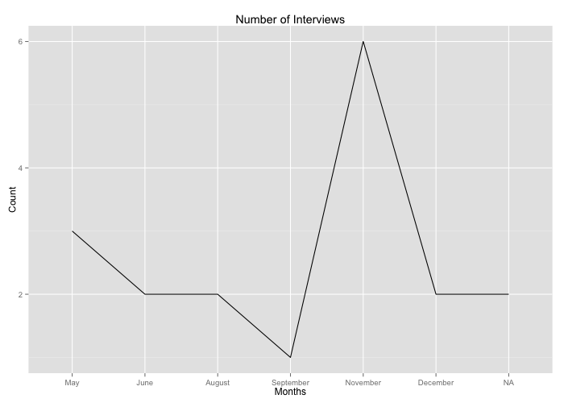
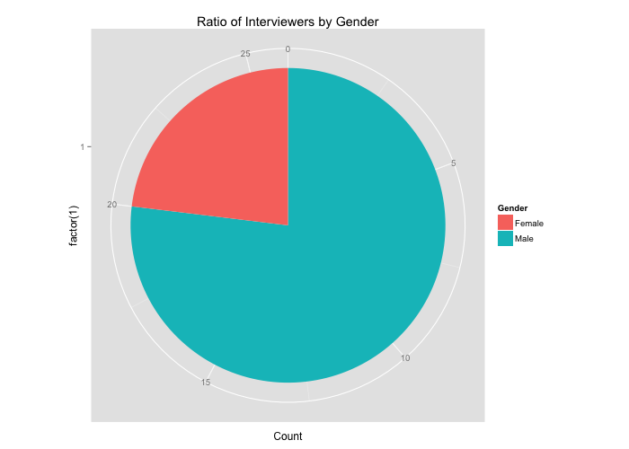

Tue 15 January 2013
By Alesha Summers
In misc .
I just completed a project that has taught me quite a bit about designing and implementing an experiment. I want to break the write up of this project into several manageable pieces that I hope will be insightful.
Introduction: Background information on how this project came about and what I hoped to accomplish in completing it.Data Collection, Cleaning and Integration: Describes details of what information was collected and how it was organized to reflect the goals of this project.Data Mining and Visualizations: Introduces some of the scripts and their resulting graphs.Analysis and Conclusions: Final thoughts and reflections on the process and outcomes.
Introduction Many people emphasize how important it is to set the stage for the rest of your career by making sure that your first job puts you in the right playing field. Like many of my fellow, recent graduates, entering the job market on the right foot is not as easy as it seems. To add to that, I've deviated away from the type of career I had originally planned on doing. So now it's up to me to guide my own learning path and build up my own experience from scratch.
For the past six months, I've met with companies to try to find the right organization to work with. I've learned a lot about what I expect from companies and what they expect from me in return. I've also learned a lot about what I can expect from myself, which has helped me to find the right mix of learning materials and projects to work on that will help me solidify the things I've learned.
I am naturally a curious person, and I like to ask questions especially in interviews. Asking questions during an interview is important for me so that I know whether or not I would like to work with a company. During interviews, I made notes and then stored that information in text files. Until a few weeks ago when I was thinking about what kinds of data analysis projects I want to do, I didn't have any intentions to do anything with this data. When I looked back in my files, I realized that I had a lot of useful data that could be put to good use for analyzing. This was the inspiration for this project. I decided that I would store this information in a database, use R to run some stats on the information and create visualizations that would help me have a better understanding of the data that I collected.
I decided to pursue the project for 2 reasons. First, doing my own research and analysis is good for gaining experience in developing and implementing an experiment from start to finish. The second reason I decided to pursue this project is because the results from the analysis should help me to have better insights of what things I can do to improve my chances of being picked by the right company. In addition, the goal was to discover what types of companies I should focus on, based on the information I have gathered.
Data Collection, Cleaning and Integration Now I want to focus more on the details of what kinds of data I collected, and how I organized it.
There are 5 areas that I think are important to keep track of when searching for a job:
Companies/Industries
Positions
Interviews/Interviewers
Networks
Documents
It's important to keep track of which companies you've interviewed with, which people you have been interviewed by, the jobs you have applied for, the documents that you have sent, and the depth of your networks. These areas give you a feel for what people are looking for and can help to focus your efforts on the things that have the highest impact on whether or not you will be able to find what you are looking for.
From these 5 basic areas, I developed a MySQL database schema to capture the important pieces of information. For example, with regard to a specific company it's important to know what year the company was founded, the industry, the number of employees, and whether or not the company is profitable. These pieces of information give you an idea of where a company is in the company life cycle.
With regard to documents, you might want to know if you sent a company your GitHub profile, or if you just sent them your CV and a cover letter. Depending on the position, some companies want to see more samples of your work. By keeping track of documents and how they relate to your interaction with companies you can get a feel for which ones are the most effective at grabbing someone's attention.
With regard to the interview process you may want to know the date of the interview, how many times you have interviewed with a company, the place that you interviewed (e.g. a coffee shop), the time period in which the company is looking to make a final decision, the decision of the interview, the reason for either hiring or not hiring you, and the method of contact (e.g. through a friend).
In this project, I analyzed my job search process on 19 different attributes, some of which I just mentioned. From this information that I have collected, I can ask myself several important questions:
What is the average size of the company that I have/haven't had an interview with?
What method of contact is most likely to lead to an interview?
How significant is industry in determining whether or not I get called in for an interview?
What is the ratio of women to men who have interviewed me?
How has the frequency of interviews changed over time?
Is there a relationship between the occupation of the person interviewing me and the response of the interview?
What is the most common reason for being accepted/turned down?
Due to various circumstances, I didn't start out with the same data for every company I contacted. For example, there are some companies that I've had multiple interviews with. Therefore, I have more information about those companies, but that's okay because the problems associated with inconsistent data resemble a realistic situation. Real world data comes in all shapes, sizes, and qualities. In an effort to make my data more consistent, I did some company research to get missing pieces of information.
Since I stored my data in a text format, I had to convert it to CSV before I could load it into MySQL. Even after I converted all of my data into CSV, I still had some issues with the layout of my data. Some information had to be reformatted in a way that could be properly queried. For example, whether or not I sent a company my CV was represented by the string 'yes' or 'no,' but it had to be changed to 0s and 1s so that I could treat the values as booleans. Thankfully, I wrote a dump file so that I could easily tear down and build up the database in the event that I found something weird in my files that didn't belong. Here's a sample:
DROP DATABASE IF EXISTS prospectsDB ;
CREATE DATABASE prospectsDB ;
USE prospectsDB ;
SET foreign_key_checks = 0;
CREATE TABLE IF NOT EXISTS
company (
id SMALLINT AUTO_INCREMENT , PRIMARY KEY ( id ),
name VARCHAR ( 100) NOT NULL ,
year_founded YEAR ,
size_id TINYINT , FOREIGN KEY ( size_id ) REFERENCES size ( id ),
profitability_status VARCHAR ( 3)
);
Now that I have all of my data in one place, it's time to take a look.
The Schema:
mysql > show tables ;
+-----------------------+
| Tables_in_prospectsdb |
+-----------------------+
| company |
| company_industry |
| company_interview |
| company_interviewer |
| company_job_title |
| documents |
| industry |
| interview |
| interview_network |
| interviewer |
| job_title |
| network |
| size |
+-----------------------+
The size table which represents the number of employees:
mysql > SELECT * FROM size ORDER BY id ;
+----+------------+
| id | size |
+----+------------+
| 1 | 1- 10 |
| 2 | 11- 50 |
| 3 | 51- 200 |
| 4 | 201- 500 |
| 5 | 501- 1000 |
| 6 | 1001- 5000 |
| 7 | 5001- 10000 |
| 8 | 10001+ |
+----+------------+
Data Mining and Visualization At first I tried to implement the project in SQLite, but after I ran into a few problems with my CSV files not being correctly imported, I decided I would switch over to MySQL.
Querying is probably one of the most fun things about the project because it's like putting a quarter into a machine and getting out a surprise toy. You don't know what you are going to get out of the data until you've poked around a little bit. Here is a sample query:
SELECT size , count ( size ) AS frequency
FROM size LEFT JOIN company ON company . size_id = size . id
GROUP BY size . id ORDER BY size . id ASC ;
+------------+-----------+
| size | frequency |
+------------+-----------+
| 1- 10 | 4 |
| 11- 50 | 6 |
| 51- 200 | 15 |
| 201- 500 | 3 |
| 501- 1000 | 3 |
| 1001- 5000 | 1 |
| 5001- 10000 | 2 |
| 10001+ | 1 |
+------------+-----------+
This query shows me the size distribution for all companies. As it turns out, the average company that I've interviewed with has between 51 and 200 employees. I should point out, that the research in this project wass aimed at descriptive statistics rather than predictive statistics. So I know that the average company I've interviewed with is relatively small, but that doesn't exactly tell me why this is the case.
To generate visualizations, I connected my MySQL database to R using the RMySQL library, and I used the ggplot2 library to graphically represent the results.
As you can see the size distribution for the companies that I have interviewed with is more skewed towards smaller companies.
For the sake of learning ggplot2, here is the output regarding the ratio of interviewers by gender and the rate of interviews over time:
My variable in R:
intOverTime <- dbGetQuery( con, "SELECT count(*) AS Count, MonthName(date) AS Month FROM interview GROUP BY Month(date)" )

The intOverTime plot:
intOverTimePlot <- ggplot( data= intOverTime, aes( x= factor( Month, levels= c( "May" , "June" , "July" , "August" , "September" , "October" , "November" , "December" ), ordered= TRUE ), y= Count, group= 1 )) + geom_line() + xlab( "Months" ) + ylab( "Count" ) + ggtitle( "Number of Interviews" )
My variable in R:
mTw <- dbGetQuery( con, "SELECT gender AS Gender, count(*) AS Count FROM interviewer GROUP BY gender ORDER BY Count DESC" )

The mTw plot:
mTwPlot <- ggplot( data= mTw, aes( x= factor( 1 ), y= Count, fill= factor( Gender))) + geom_bar( width= 1 , stat= "identity" ) +
xlab( "" ) + ylab( "" ) +
coord_polar( theta= "y" ) + labs( fill= "Gender" ) + ggtitle( "Ratio of Interviewers by Gender" ) + scale_fill_discrete( "Gender" , labels= c( "Female" , "Male" ))
These are just a few of the graphs that I created. Pretty simple stuff, but considering that 8 months ago my technical skills were nonexistent, it shows how far I've progressed in my learning.
Quick rundown of useful stats using Rs mean(), sd(), and cor() functions:
Mean age of all companies: 8.03 years
Mean age of interviewed companies: 3.54 years
Mean age of non-interviewed companies: 10.8 years
Standard deviation of age of all companies: 10.08 years
Standard deviation age of interviewed companies: 3.4 years
Standard deviation age of non-interviewed companies: 11.8 years
Size 2 represents the range from 11-50 employees, size 3 represents the range from 51-200 employees, and size 4 represents the range from 201-500 employees.
Mean size of all companies: 3.18
Mean size of interviewed companies: 2.46
Mean size of non-interviewed companies: 3.62
Standard deviation of size of all companies: 1.53
Standard deviation size of interviewed companies: 1.13
Standard deviation size of non-interviewed companies: 1.57
Correlation between the age and the size of all companies: 68.7%
Correlation between the age and the size of interviewed companies: 75.5%
Correlation between the age and the size of non-interviewed companies: 65.4%
Analysis and Conclusions The summary statistics show the stark contrast between the companies that I have interviewed with versus the companies that I have not had interviews with (i.e. the companies who I have applied to but not granted an interview with). Compared to the non-interviewed companies the companies that I did interview with are about 32% smaller and 67% younger, but I suppose my sample is quite a bit more biased than the population given that there are a great number of start-ups in my area.
From a design and implementation perspective, I've learned a great deal about relational database design best practices, dealing with data types and formatting, and about writing scripts to retrieve relevant information. In addition, it's always a bit tricky navigating new packages or libraries for the first time. RMySQL and ggplot2 are common and standard, but I had no knowledge of them at the onset of this project. Luckily, R has an abundance of documentation and resources to get help. I have found that the more I do the easier it is to find solutions to problems and understand the reasoning behind my mistakes.
From a research perspective this project has helped me to understand which methods of contact are more effective for connecting with the right people and showing me in which areas I can improve. For example, the most common reason for not being hired is my lack of seniority. This can only be fixed by time. The second most common reason for not being hired after an interview is that there existed a lack of mutual agreement. In my case, this was often regarding the type of contract. For example, many companies that I've interviewed with are looking only for interns, which turns out to be about a 6 month contract, and I am looking for a full-time position. Because of this disagreement, further negotiations were not pursued. Given this information, I have some leeway in how I decide to make decisions in the future.
This project has been interesting because I had the chance to personally collect the data, and because the results are directly applicable to what I am trying to accomplish - gaining experience in data analysis, and starting my career.